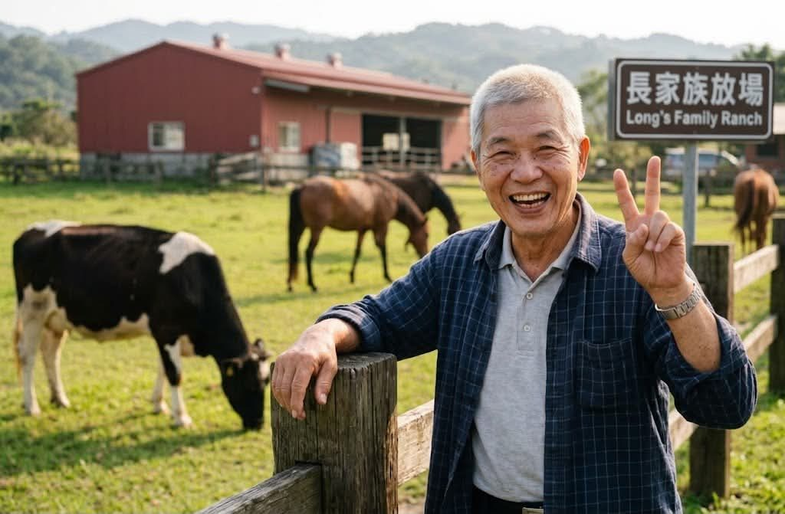

12小時
阿龍伯，去牧場玩。

AI 內容
♥ 24
💬 24
⟲
➤

和善里文化展館外觀
歷史與傳承
和善里種茶的歷史可以追溯至日治時期，當時因氣候與土壤條件適合茶樹生長， 逐漸發展成北部重要的茶葉產地之一。歷經數代茶農的耕耘與傳承， 和善里發展出獨特的製茶工序與品茗文化。
龍井茶、東方美人茶等品項至今仍是里民餐桌上與待客時不可或缺的角色， 每年茶季，許多老茶農仍堅持以手工揉捻茶葉，將這份百年技藝延續下去。
和善里保留了為數不少的老屋與街屋建築，紅磚瓦頂與木造門窗訴說著小鎮的歲月痕跡。 從清代開墾聚落、日治時期的街屋立面，到戰後改建的傳統三合院， 每一棟建築都是里民生活記憶的載體。
這裡記錄著和善里現存的歷史建築與街區，是認識小鎮發展脈絡的重要線索。
阿龍伯，去牧場玩。

AI 內容我是陳文龍，大安區街坊喚我阿龍伯。1958年7月7日生的巨蟹座，血型A。 曾是熱血陸軍，現在最拿手滷肉與照顧蘭花。我愛在陽台泡茶、跟孫子恩俊自拍。 人生賺，像我最愛的姿勢一樣：比個「耶」就過去了！
阿龍伯，去牧場玩。
AI 內容和善里文化展館由里辦公處與在地文史工作者共同籌辦， 致力於保存與推廣和善里的歷史文化與生活記憶，展館內容持續更新中。
和善里有著豐富的歷史民俗，不過，我們認為和善里的人情味也同樣重要， 因此，我們開設了人文紀事，讓里民可以登錄並分享自己的生活， 讓社區的溫暖、有趣、歡喜的每個瞬間，可以一直在這裡記錄著。